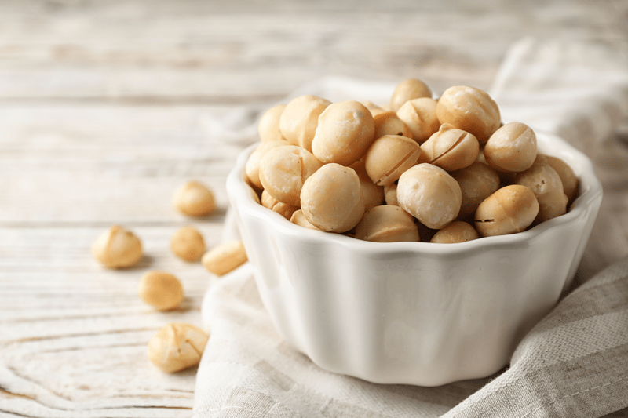
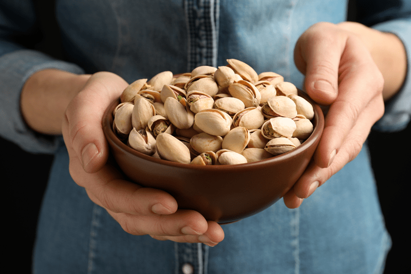
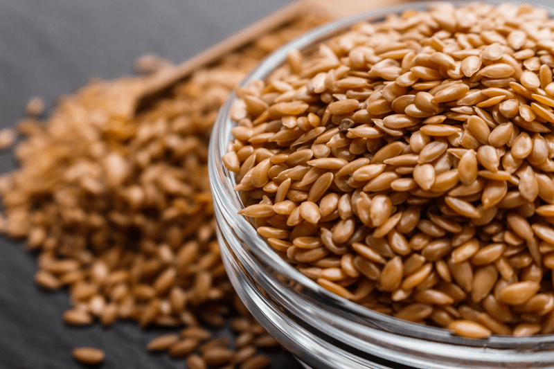
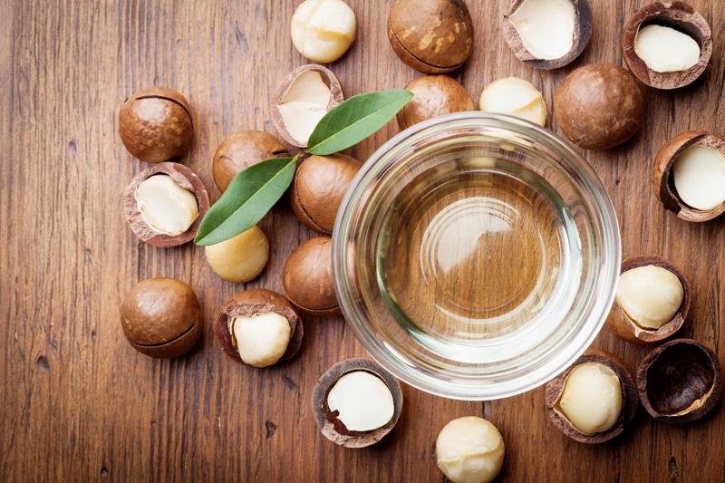

How Long Do Nuts & Seeds Last?
I get this question a lot, and it’s a smart one because everyone wants to make the most of their investment. And I say investment because nuts are not cheap, especially if you seek raw and organic ones. There isn’t an exact expiration formula to their shelf life due to the many variables that can come into play such as climate, packaging, how old they were when purchased, and so forth. But let’s dive in and see if I can lay out a few helpful ideas.

Naturally, the shelf life decreases if they are not stored properly. Once the bag is opened, the race is on. As I was sitting here thinking about this, I realized that I tend to treat nuts and seeds much like I do fresh produce. Granted they will last longer than a head of lettuce, but whole food ingredients are perishable.
I have created a habit in my household and business. First of all, I soak and dehydrate all the nuts and seeds once I bring them home. After they have gone through this process, I put them in freezer-safe mason jars and place them in the freezer. Now they are ready for my wild recipe creating moments that tend to spring on me without much warning, and I also have the peace of mind in knowing that they will remain fresh until needed. To learn more about the soaking process for particular nuts and seeds, click (here).
Freezer space is a premium, and you may not have extra space to store all your nuts and seed, but don’t worry, you can safely store them in the fridge as well. Or maybe you are the road traveling and don’t have a place to keep them chilled. That’s ok. There are ways to work around your living situation.

The ultimate package for nuts…
The ultimate way to package nuts is in the one that Mother Nature has provided, in the shell. I know, such a smarty pants. :) But if you are like me, cracking shells all day long isn’t the most effective way to use your time. I use freezer-safe mason jars and cambro containers (these are great for large quantities). Some people like to use food-savor bags, so don’t feel locked into just one storage method. Use what works best for you and the safety of the nut.
Shelf Life and How to Store Nuts/Seeds
Counter / Pantry / Room Temperature
- Storing nuts/seeds at room temperature will reduce their shelf life.
- Shelled nuts and seeds can last from one to three months. Unshelled nuts may keep up to two years. If you live in a warmer climate, I would only keep them on the counter for up to a month.
- Store in airtight glass containers. Nuts pick up surrounding odors if not sealed tightly.
- Keep away from direct sunlight and heat sources (stove, dehydrator, etc.)
Refrigerator
- Shelled nuts and seeds can last from three to six months in the fridge.
- Store in airtight glass containers. Nuts pick up surrounding odors if not sealed tightly.
Freezer
- Shelled nuts and seeds can last from six months to a year in the freezer.
- Store in airtight containers. Nuts pick up surrounding odors if not sealed tightly.
- If you use glass jars, make sure that they are freezer-safe. If you use plastic containers be sure to double-check that they are BPA-free. And lastly, if you use plastic bags or food-saver bags make sure that they are BPA-free and that they seal tight. Remove as much air from them as possible when closing.

How to tell if Nuts/Seeds are bad, rotten, or spoiled
Smell
- Although not a perfect test, your nose is usually the most reliable instrument to find out if nuts or seeds have gone bad.
- Rancid nuts smell unpleasant. The best way to describe the odor is that spoiled nuts smell like either paint, fish, or grass.
Taste
- Give one a taste. If the nut tastes sour or bitter, it has become rancid.
- If you purchase nuts or seeds from bulk bins, ask if you can sample them before purchasing. I typically don’t buy nuts and seeds from the bulk sections in stores because they tend to go rancid much quicker. You have no idea how long they have been out of their packing, etc. Always look for a reputable food store that has a high turnover of their products.
Visually Inspect
- Nuts that have darkened in color or have an oily appearance are a sure sign they’ve turned rancid.
- Check that the nuts haven’t become shriveled, dry, or moldy in appearance.

Why do Nuts/Seeds Go Bad?
Nuts are not only a delicious snack, but they’re also full of protein, healthy fats, vitamins, antioxidants, and minerals. Nuts can turn rancid due to their unsaturated oils which oxidize quickly during exposure to light, heat, and air. Squeeze a nut hard enough, and you have oil! Ok so you don’t really “squeeze” nuts or seeds, but if you over-process them in the food processor, you will quickly notice that they start to release their oils. If they have been roasted, chopped, and ground you will want to use them as soon as possible because they tend to go rancid much quicker than whole nuts.
What if I Eat Rancid Nuts?
Most likely you won’t suffer any side effects, other than the unpleasant taste in your mouth. But in some cases, rancid nuts can irritate the lining of your stomach and intestines, and you may experience nausea, vomiting, or diarrhea. If you open a container of nuts/seeds and question their freshness, always err on the side of caution and skip eating them.
The Best Advice Ever!
The best piece of advice that I can give you regarding nuts and seeds is to TASTE TEST them before ever adding them to a recipe. A sure-fire way to RUIN a recipe is to use nuts or seeds that have gone bad.
© AmieSue.com